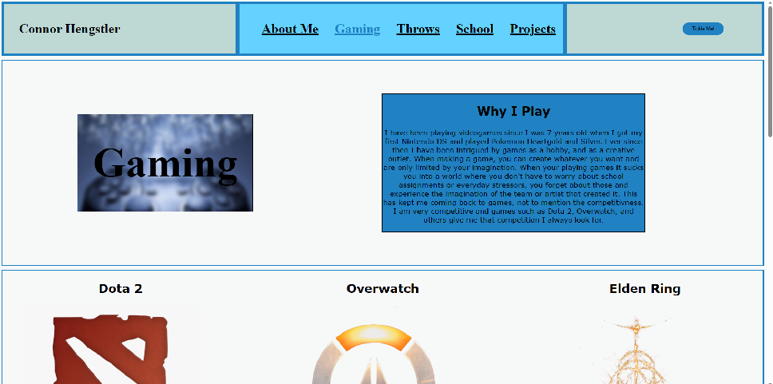

Who Am I?
Why thank you for asking! I am a passionate Computer Science student born in 2005. I am currently
attending
Vancouver Island University and living on Vancouver Island. I
touched my first computer
age of 11 and fell in love with the creativity and customizability of it. I have unfortunately
been chronically online
ever since, but it has created a passion to become a computer science student and create things
that will inspire an 11 year old
somewhere around the world (hopefully not inspiring them to build a pillow fort around the
computer to hide it from their parents).
I love to learn about everything computer science related, and give my all into doing whatever I
am learning currently.
Skills:
C++ | HTML | CSS | Git | Unity 2D | Unity 3D | Problem Solving | Fun Having


This multi script data structure was created in C++ for a school assignment. I implemeneted error
handling
and dynamic memory allocation, as well as various standard functions including multiple insert
and remove functions.

This solo school assignment was my first project writing in CSS 3 and HTML 5.
In this
project I learned how to use HTML 5 to create a multi-page website and CSS 3 to style it.
Even though I handed this assignment in, I am still tinkering with it to apply
new concepts I learn outside of class.

This is my passion project. If you read my about me page you know I am a competitive track and
field athlete.
My goal for this is to create a cross-platform database application to assist in stat-tracking
and training
for track and field athletes of all levels. I have guaged interests from Olympic level athletes
and coaches
and am excited to progress this further.

This is in it's very early stages as a personal project. I am experimenting with Unreal Engine 5,
and game development.
I have made a 2D platformer using the Unity Engine which was unfortunately lost when I deleted
my Unity hub, but am attempting
to swap to Unreal Engine. I am doing all of the coding and rigging on my own but using free
assets
since my artistic abilities are quite lacking.